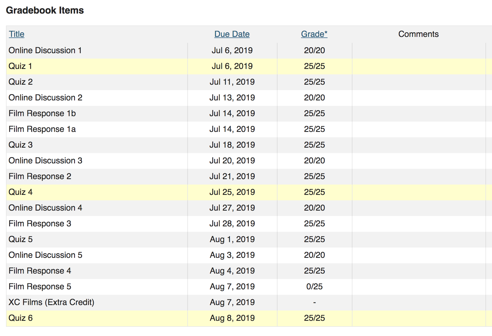

<div style="height: 100%" class="ui grid ">

    <div class="column">
  
           
          
          
          <a class="ui big image" style="padding-left: 300px; padding-top: 80px; "href="https://en.wikipedia.org/wiki/Nicolaism" target="_blank"></a>
           
           
           
           
           
           
           
          
          <h1 style="padding-left: 240px; font-size: small;" hidden>'ʏᴏᴜ ʀᴇᴍɪɴᴅ ᴍᴇ ᴏꜰ ᴍʏ ꜱᴏɴ. ᴠᴇʀʏ ꜱᴍᴀʀᴛ.' - ꜱʜɪᴜʟɪɴɢ ʜᴜᴀɴɢ</h1>
          <h1 style="padding-left: 240px; font-size: small;" hidden>some of my fav foods: sushi, ice cream, panini, bread with marinara and oil, prime rib, Zip Pac</h1>
          <h1 style="padding-left: 240px; font-size: small;" hidden>** 𝓜𝓲𝓼𝓼𝓲𝓷𝓰 𝓗𝓢 𝓙𝓾𝓷𝓲𝓸𝓻 𝓨𝓮𝓪𝓻 𝓪𝓬𝓪𝓭𝓮𝓶𝓲𝓬 𝓮𝓿𝓪𝓵𝓾𝓪𝓽𝓲𝓸𝓷</h1>
          <h1 style="padding-left: 240px; font-size: small;" hidden>*** i dont know if this was intentional: velocity is half european (the cars) and half japanese (the lanturn) ... representing the Italian grandfather and the Japanese grandmother</h1>
 


    </div>
    
</div>